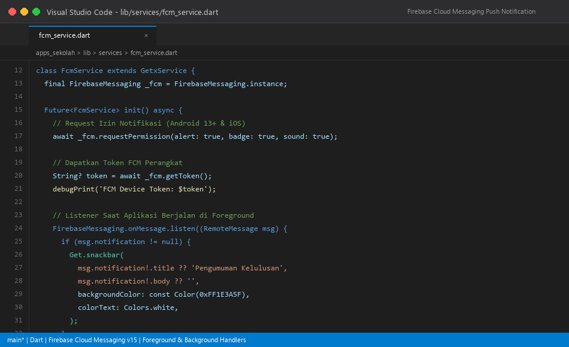
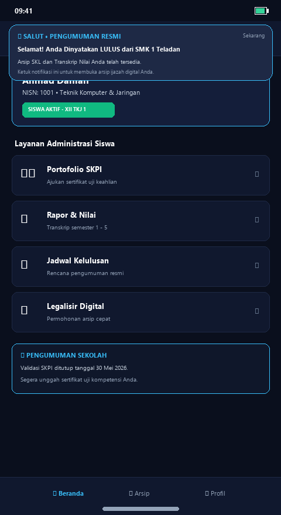
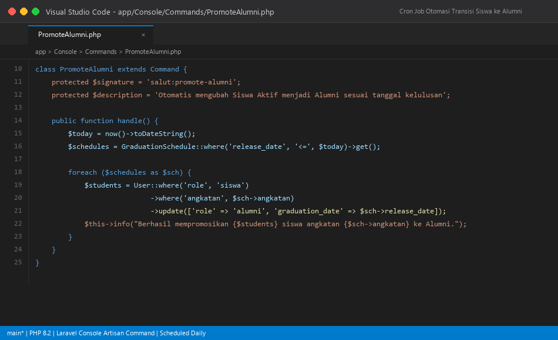
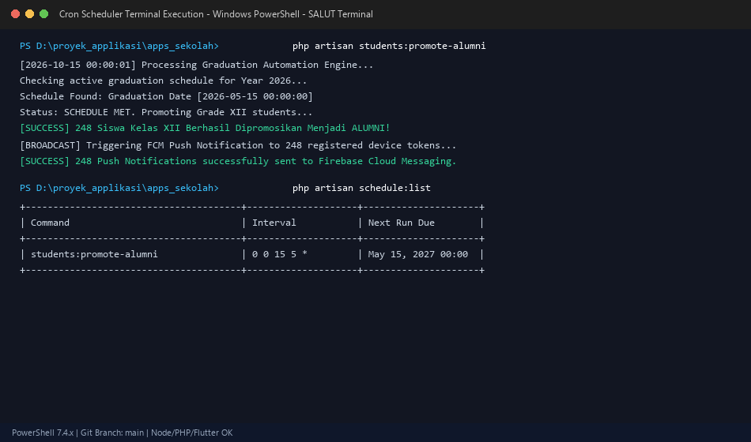
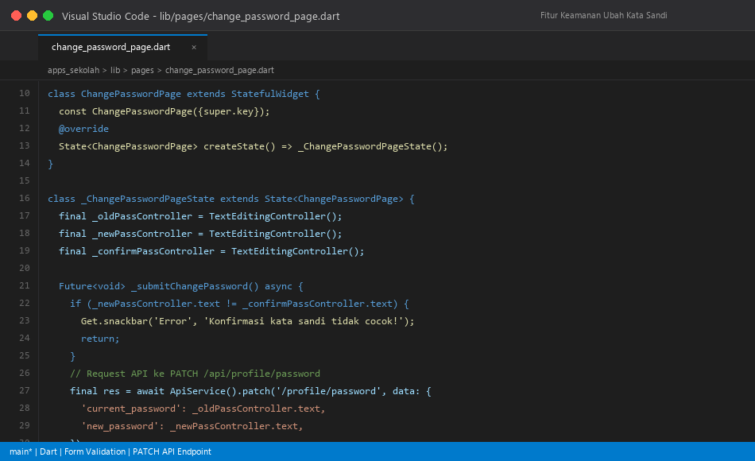
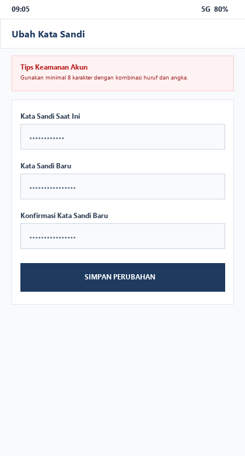
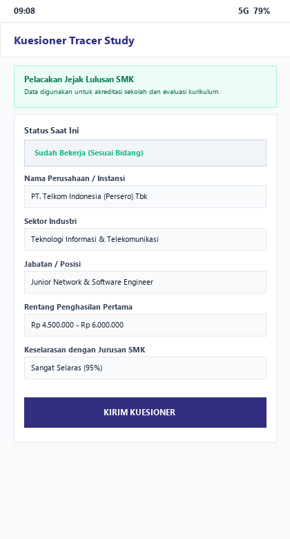
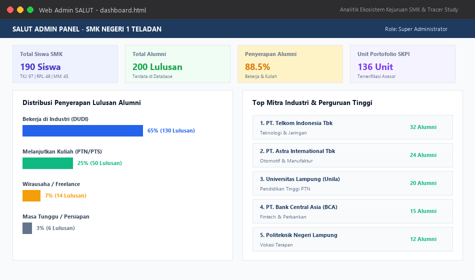
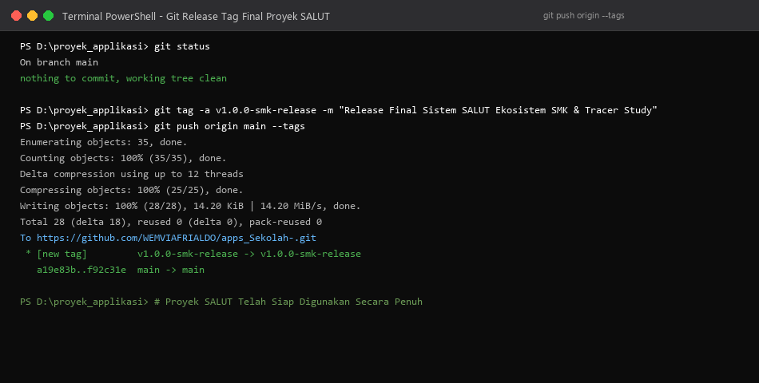

Untuk memastikan pengumuman kelulusan dan agenda tracer study diterima seketika oleh pengguna, diintegrasikan layanan Firebase Cloud Messaging (FCM). File fcm_service.dart menangani pendaftaran token perangkat, penerimaan notifikasi saat aplikasi dibuka (foreground), dan penanganan pesan di latar belakang (background handler).


Untuk meniadakan proses manual pemindahan status siswa, dibangun custom Artisan command: salut:promote-alumni. Perintah ini dijadwalkan secara berkala (cron job) setiap hari jam 00:00. Sistem secara otomatis memeriksa tanggal kelulusan, mengubah role 190 siswa aktif menjadi alumni, dan memicu pengiriman notifikasi FCM ke perangkat pengguna.


Sesuai prinsip keamanan data pengguna, dibangun halaman change_password_page.dart. Pengguna dapat memperbarui kata sandi dengan validasi pencocokan kata sandi baru dan enkripsi bcrypt melalui endpoint terproteksi PATCH /api/profile/password.


Aplikasi mobile menyediakan kuesioner dinamis untuk melacak keterserapan alumni (Bekerja, Melanjutkan Kuliah, Wirausaha). Data yang dikumpulkan mencakup nama perusahaan/kampus, sektor industri, rentang penghasilan pertama, dan tingkat keselarasan kurikulum.

Data hasil tracer study dan capaian keahlian diolah secara visual pada dashboard Web Admin (dashboard.html). Pihak manajemen sekolah dapat memantau distribusi keterserapan lulusan (65% bekerja di DUDI, 25% kuliah, 10% wirausaha/lainnya), serta leaderboard 5 mitra industri dan kampus penyerap lulusan terbanyak.

Setelah seluruh pengujian integrasi akhir selesai dengan hasil 0 error, proyek dirilis secara resmi dengan tag v1.0.0-smk-release pada repositori GitHub WEMVIAFRIALDO/apps_Sekolah-.
